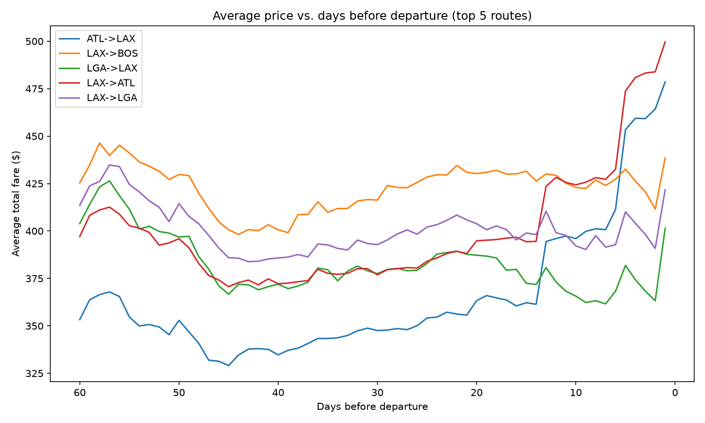
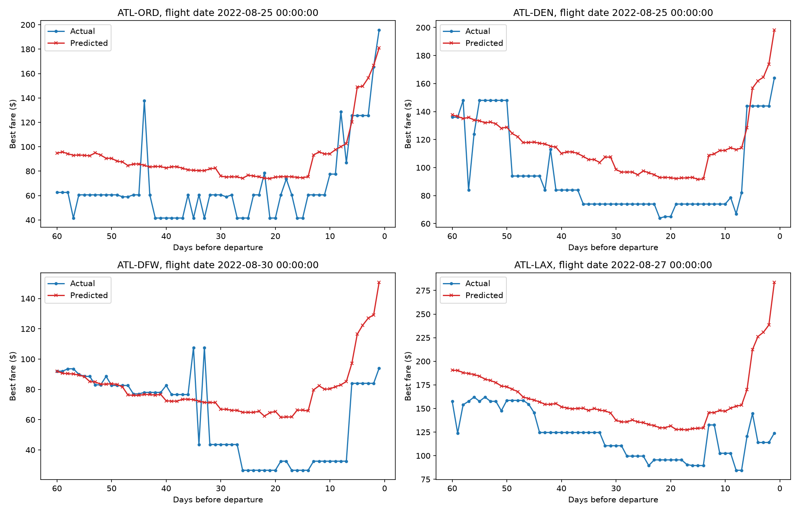

1. Price follows a predictable curve, not noise
For every major route we checked, average price doesn't move randomly as departure approaches. It dips to a low point somewhere around 40-55 days before departure, then climbs - slowly at first, then sharply in the final 10-15 days. This shape shows up consistently across different routes, which is exactly the kind of repeatable pattern a model can learn.

Average predicted fare vs. days before departure, top 5 busiest routes in the dataset.
2. Our model learns the trend, not the noise
Day-to-day fares are noisy - a single cheap seat that happened to be available doesn't repeat tomorrow. Rather than chasing that noise, our model learned the smoother trend underneath it, and consistently caught the two things that matter most for a buying decision: roughly where the low point is, and how sharply price rises in the final stretch before departure.

Model prediction (red) vs. actual fares found (blue) for one flight on each of 4 routes.
So we built a tool that predicts this curve for you
Tell us your route and travel date, and we'll predict how the price is likely to move between now and departure - and tell you whether to buy today or wait.
Try the predictor →